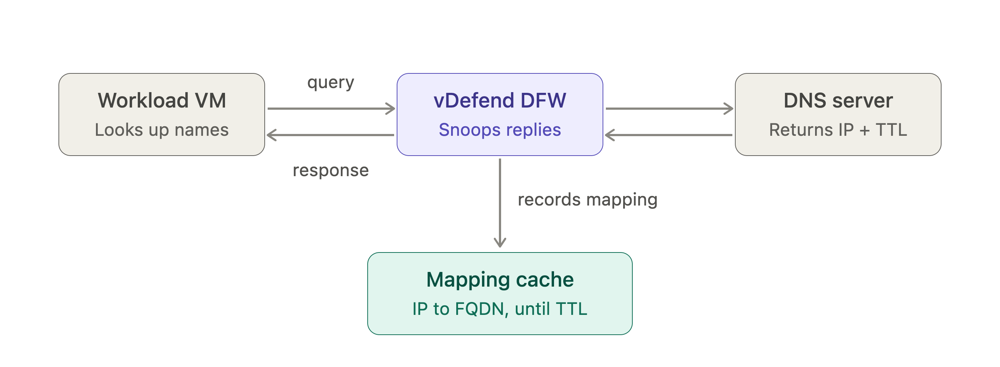
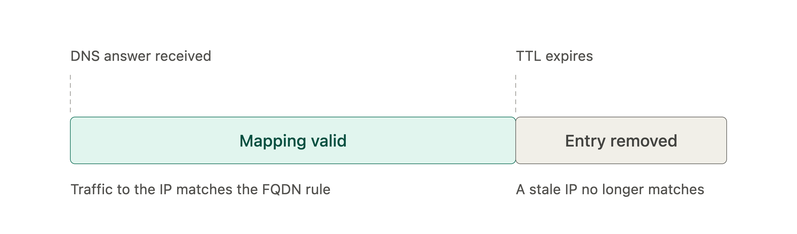
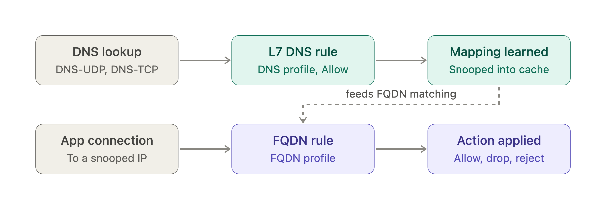
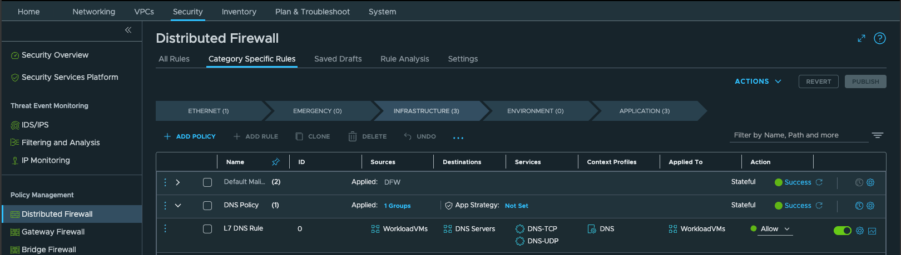
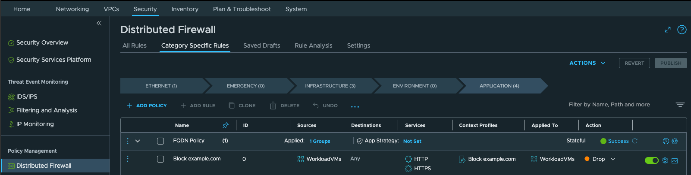

Mastering FQDN Filtering in vDefend Distributed Firewall: A Practical Guide
Why FQDN Filtering Exists
Traditional firewall rules match on IP addresses and ports. That works for a segment of internal workloads, but it breaks down for SaaS and internet destinations like Microsoft 365. Their IP ranges are large, shared, and change often, so an IP-based allowlist is either out of date or too broad.
FQDN filtering solves this by letting you write rules against domain names, such as *.office365.com. The vDefend Distributed Firewall (DFW) figures out which IP addresses currently belong to that name and enforces the rule on them.
Core Concepts
Layer 7 Enforcement
FQDN filtering is a Layer 7 feature. The firewall inspects application-level information instead of only the IP and port in the packet header.
In practice, you attach an FQDN to a rule through a context profile rather than entering it in the Source or Destination fields.
DNS Snooping
The firewall has no built-in list of which IP belongs to which domain. It learns the mapping by watching DNS traffic, which is called DNS snooping.
When a VM asks a DNS server for a name and the answer comes back, the firewall records the name-to-IP mapping. Later, when the VM connects to that IP, the firewall knows which FQDN the traffic belongs to and can apply the matching rule.

This explains most of the feature's requirements and quirks:
- The DNS exchange must be visible to the firewall: If DNS traffic isn't inspected, no mapping is learned and FQDN rules can't be enforced properly.
- The VM must resolve names through a DNS server: Static entries, such as a hosts-file entry, produce no DNS response to snoop. FQDN filtering is not effective for those destinations.
TTL and the Mapping Cache
Every DNS answer carries a Time to Live (TTL), which says how long the answer can be trusted. The firewall uses the TTL from the DNS response to decide how long to keep each IP-to-FQDN entry in its cache.

Two things follow from this:
- VMs must honor the TTL: If a VM keeps using an IP after its TTL expires, the firewall may have already dropped the mapping and the traffic stops matching the FQDN rule.
- You can override the TTL: A DNS security profile lets you replace the TTL from the response with a value you choose.
Wildcards Versus Plain Domains
A plain domain like example.com matches only that name and none of its subdomains.
A wildcard like *.example.com also covers names such as:
americas.example.comemea.example.com
Use wildcards in most cases, because services rarely live on a single hostname.
Known Limitation: ICMP
FQDN filtering doesn't cover ICMP.
If you deny all services to example.com, the following may fail:
curl example.comHowever, the following may still receive a reply:
ping example.comWhen testing FQDN filtering, use an application-layer tool such as curl rather than ping.
How the Rule Pair Works
FQDN filtering needs two rules working together:
1. A Layer 7 DNS rule: Allows DNS traffic using the DNS context profile so the firewall can snoop the lookups.
2. An FQDN allowlist or denylist rule: Evaluates the actual traffic to the named domains.

Rules are evaluated top-down and stop at the first hit, so noisy infrastructure traffic such as DNS is best matched early.
As a best practice, place the Layer 7 DNS rule near the top of the table so DNS flows don't pass through many rules before reaching their match on every lookup.
The order relative to the FQDN rule doesn't matter functionally. The FQDN rule relies on the mappings the DNS rule produces, but it doesn't need the DNS rule to sit above it.
Step-by-Step Configuration
Step 1: Create the Layer 7 DNS Rule
1. Go to Security → Distributed Firewall.
2. Click Category Specific Rules → Infrastructure.
3. Click Add Policy and give the policy a name, such as DNS Policy.
4. Select the checkbox next to the policy section and click Add Rule.
5. Configure the rule using the following settings:
| Field | Value |
|---|---|
| Name | Something descriptive, such as L7 DNS Rule |
| Source | Any, or a specific group |
| Destination | Any, or a specific group |
| Services | DNS-TCP and DNS-UDP, as applicable to your environment |
| Context Profiles | The system-generated DNS context profile, which is present by default |
| Applied To | The group of workloads the rule should protect |
| Action | Allow |
6. Click Publish.

Step 2: Create the FQDN Allowlist or Denylist Rule
1. Go to Security → Distributed Firewall and log in to NSX Manager with administrator privileges.
2. Click Category Specific Rules → Application.
3. Click Add Policy and give the policy a name, such as FQDN Policy.
4. Select the checkbox next to the policy section and click Add Rule.
5. Give the rule a clear name, such as FQDN/URL Allowlist.
6. Configure the rule using the following settings:
| Field | Value |
|---|---|
| Name | Something descriptive, such as FQDN/URL Allowlist |
| Source | Any, or a specific group |
| Destination | Any, or a specific group |
| Services | HTTP, HTTPS, or another protocol applicable to the workload |
| Context Profiles | Click the edit icon and choose Create Context Profile. Give the profile a name. In the Attributes column, choose Set → Add Attribute → Domain (FQDN) Name. Select FQDNs from the predefined list or define a custom one. Then click Add and Apply. |
| Applied To | DFW or a specific group |
| Action | Allow, Drop, or Reject |
7. Click Publish.

Best Practices for Configuring the DNS Rule
The DNS rule is the foundation of FQDN filtering. If it's missing, misplaced, or too narrow, every FQDN rule can silently fail or misbehave.
Here are design recommendations that you should validate in your environment.
1. Place the DNS Rule at the Top of the Rule Base
DNS is high-volume infrastructure traffic. A rule near the top means each lookup is matched immediately instead of being evaluated against many rules first, which reduces rule-processing overhead.
This is a recommendation for efficiency. FQDN filtering still works if the DNS rule sits below.
2. Use the System DNS Context Profile with the DNS Services
Pair the default DNS context profile with:
DNS-UDPDNS-TCP
UDP carries most DNS lookups, but TCP is used for large responses and zone transfers. Including both avoids gaps.
3. Use an Allow Action
The purpose of the Layer 7 DNS rule is to let DNS flow so it can be snooped, not to restrict it.
4. Make Sure DNS Traffic Hits the Layer 7 DNS Rule
This is the real requirement.
The Layer 7 DNS rule must be the first rule that matches DNS traffic, and it must carry the DNS context profile.
Any earlier rule that matches DNS first can cause problems.
Drop or Reject Rules
These block DNS lookups outright, so the VM can't resolve the domain.
Allow Rules Without the DNS Context Profile
This is the more subtle case.
For example, a high-priority rule may broadly allow infrastructure traffic, including DNS, without using the DNS context profile.
DNS continues to work normally, but the traffic is never snooped. As a result, FQDN enforcement fails quietly.
Review rule order across categories and policies, not just within one section, for anything that could match DNS before the Layer 7 DNS rule does.
Confirm that the Layer 7 DNS rule is actually receiving DNS traffic by checking its hit counts and logs.
5. Scope "Applied To" to Match Your FQDN Rules
The DNS rule must apply to every workload that your FQDN rules apply to.
Otherwise, those VMs' DNS lookups won't be snooped and the FQDN rule won't recognize their traffic.
A common pattern is:
- One broad DNS rule applied to all workloads in scope.
- Several narrower FQDN rules.
6. Consider Restricting the Destination to Approved DNS Servers
The DNS rule can use Any or a specific group as the destination.
In a mature environment, defining a group for your corporate DNS resolvers narrows the rule and prevents VMs from using arbitrary external resolvers.
Make sure the group is complete, or you'll block legitimate lookups.
7. Keep VMs on a Real, Dynamic DNS Server
Don't rely on static DNS entries for domains you intend to filter.
Static entries don't produce DNS responses for the firewall to snoop.
8. Plan for TTL Behavior
Confirm that your VMs and applications honor DNS TTLs.
If an application caches addresses longer than the TTL, you may see intermittent blocks.
If TTLs from the DNS server are very short or otherwise unsuitable, a DNS security profile can override the TTL.
9. Check for Encrypted DNS
If clients use:
- DNS over HTTPS (DoH)
- DNS over TLS (DoT)
the lookups may not appear as plain DNS traffic, so DNS snooping can't see them.
A common mitigation is to standardize clients on your internal DNS resolvers.
10. Validate with the Right Tools
After publishing the rules, test using:
curl example.comor a web browser rather than:
ping example.comFQDN filtering doesn't cover ICMP.
Also check the rule hit counts and logs for both:
- The DNS rule
- The FQDN rule
11. Use Wildcard FQDNs
This isn't part of the DNS rule itself, but a perfectly configured DNS rule won't help if the FQDN rule uses:
example.comwhen your applications actually access:
app.example.com
xyz.example.comIn those cases, use:
*.example.comTroubleshooting Checklist
If an FQDN rule isn't behaving as expected, check the following in order:
- Is the DNS rule published and applied to the same workloads?
- Is any earlier rule dropping or allowing the traffic before it reaches your FQDN rule?
- Is DNS traffic being matched by the Layer 7 DNS rule with the DNS context profile?
- Is the VM resolving through a DNS server rather than using a static entry?
- Is the application honoring the DNS TTL?
- Is the FQDN written as a wildcard if subdomains are involved?
- Are you testing with ICMP? If so, switch to an application-layer test such as
curl.
Summary
FQDN filtering lets vDefend Distributed Firewall enforce policy by domain name instead of by IP address.
It works by:
1. Snooping DNS responses.
2. Caching name-to-IP mappings for the duration of the DNS TTL.
3. Applying a Layer 7 rule to the traffic that follows.
The configuration requires two rules:
1. A DNS rule.
2. An FQDN rule.
Placing the DNS rule near the top of the rule base is recommended, although it isn't mandatory as discussed above.
Most FQDN problems come from a weak DNS rule, whether that's incorrect positioning, a gap in scope, or another rule higher in the rule base matching DNS traffic first.
If you get the DNS rule right, the FQDN rules built on it are far more predictable.
Blog Author
Apoorv Malmane is a Principal Engineer at Broadcom specializing in network and security virtualization, with a focus on vDefend and VMware Cloud Foundation. He has contributed to and authored VMware Hands-on Labs available to practitioners online, and is a content contributor to the VCP-PCS Administrator certification exam. He is a vExpert and an IEEE Senior Member, and has staffed the Expert Bar at VMworld and VMware Explore.
Disclaimer: The views and opinions expressed in this article are my own and do not necessarily reflect those of my employer.